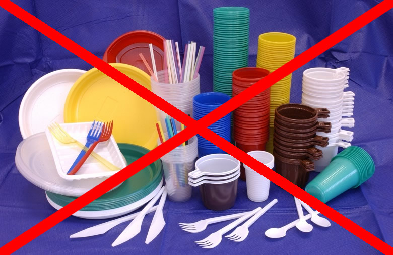
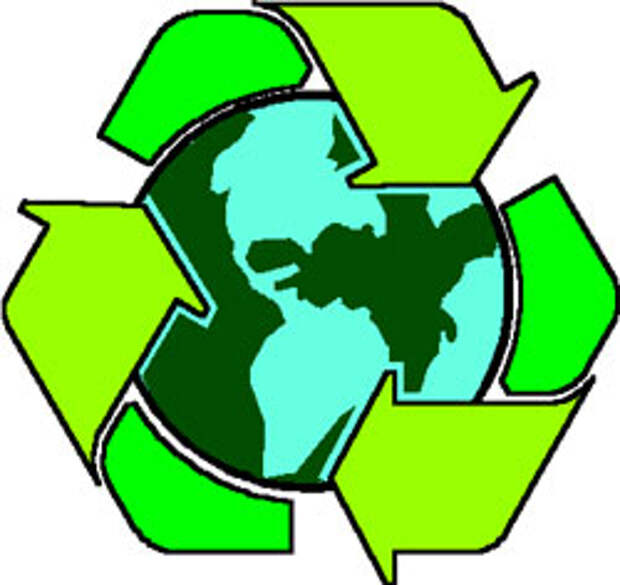
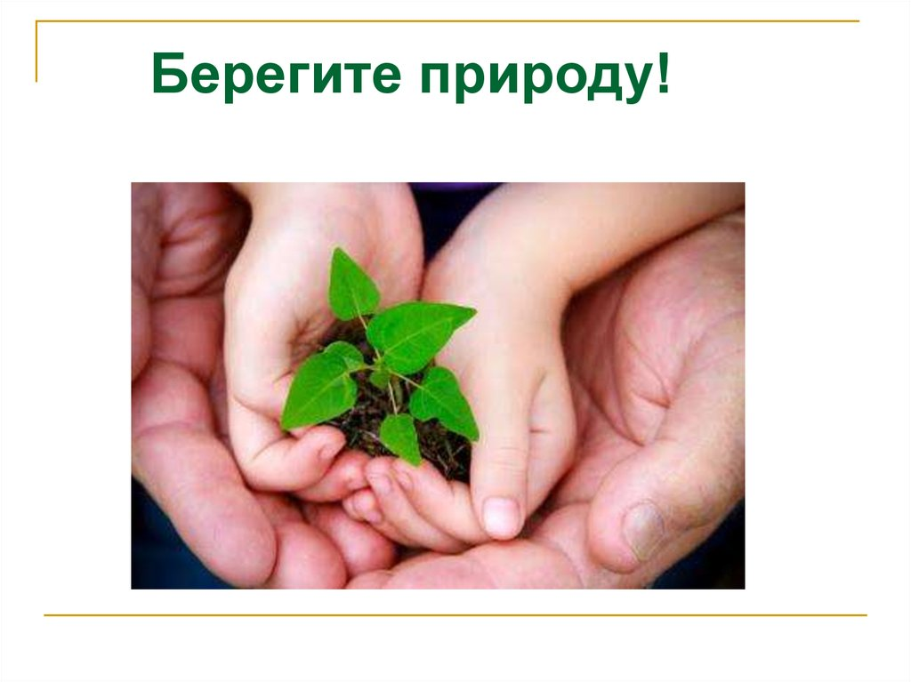

На сегодняшний день уже никого не удивишь словами с приставкой «эко». Не так давно, лет 30-40 тому назад, то, что на самом деле подразумевает это слово, было настолько естественно, что не было необходимости придумывать какие-то дополнительные названия для такого образа жизни. Иногда это просто дань моде и ничего кроме улыбки не вызывает. Но в большинстве случаев, это сегодняшняя необходимость и ближайшее будущее завтра. Наша жизнь на Земле стала разрушительна не только для нас самих, но и для нашей планеты. Роль мнимого комфорта и удобства перешла все границы разумности.
Если раньше мы стремились к благополучию любой ценой, то сегодня мы не можем себе этого позволить. Поэтому то, что подразумевает понятие «экологичность» имеет большее значение почти во всех сферах нашей жизни и не может оставить равнодушным почти каждого.
Тема экологичного образа или стиля жизни сегодня является важной составляющей нашего будущего эволюционного развития. Это должно стать не просто экологичным образом жизни, а экологичным образом мышления. Мы привыкли не задумываться о многих вещах, которые мы имеем или получаем каждый день. А также не осознавать то, куда мы вкладываем свою жизненную энергию. Наше общество – это общество потребителей, а такой путь рано или поздно приведет к разрушению всего живого на этой планете. Природа создала нас для чего-то более возвышенного, чем просто для выживания и уничтожения всего живого на Земле. То, что мы можем сделать уже сегодня не зависит от того места где мы живём и как мы живём. Буквально каждое наше действие можно повернуть в сторону экологичности, при этом, не ущемляя себя в удобстве и комфорте. Достаточно оглянуться вокруг и посмотреть на обычные вещи с позиции здравомыслия. Как сказал Махатма Ганди: «Если ты хочешь перемену в будущем - стань этой переменой в настоящем».
Далее рассмотрим конкретные советы, с чего можно начать и к чему необходимо стремиться в нашей повседневной жизни:
1. Начните отказываться от одноразовых предметов.

Ходить в магазин с многоразовой сумкой
Вместо того, чтобы каждый раз в магазине покупать новый пакет, постарайтесь постоянно носить в сумке или возить в машине обычную многоразовую хозяйственную сумку. Это действительно способно снизить производство пластика: когда в Китае запретили давать покупателям бесплатные пакеты в магазинах, потребление пластика в стране снизилось на 200 тысяч тонн в год.
Использовать многоразовые подгузники
Одноразовые подгузники избавляют от ежедневной стирки и глажки, но всё же тряпочные аналоги экологичнее. Одноразовые подгузники изготавливаются из материалов, почти не поддающиеся переработке. Один ребёнок оставляет после себя примерно 5000 памперсов: получается, за своё раннее детство он наносит огромный вред окружающей среде. Поэтому мамам и папам стоит чаще использовать пелёнки и ползунки, которые можно постирать, а также как можно раньше приучать ребёнка к горшку.
Заменить одноразовые салфетки на многоразовые матерчатые.
Для изготовления одной пачки салфеток нужно около 200 граммов дерева. То есть, ради того, чтобы вы и ваши гости пару раз вытерли руки после обеда, переработают несколько веток дерева. Если пользоваться салфетками регулярно, за пару лет можно «уничтожить» целое дерево. Так что лучше сервировать стол не бумажными салфетками, а многоразовыми – из ткани.
Во-первых, мы сократим потребления пластика, а во-вторых, позаботимся о своём здоровье. Уже доказано, что вода в пластиковых бутылках как минимум бесполезная как максимум вредит нашему здоровью.
Покупайте многоразовые проездные билеты на общественный транспорт
Это сократит количество мусора, который не перерабатывается в России. Карточки имеют многокомпонентный состав, куда входит бумага, пластик и алюминий (магнитная лента). Это усложняет процесс переработки, поэтому проездные билеты не принимаются в пунктах сбора вторсырья. При этом услугами московского метрополитена ежедневно пользуются от 7 до 9 миллионов человек.
2. «Зеленое» потребление

Всё, что мы хотим приобрести, необходимо оценивать с точки зрения полного жизненного цикла товара. Выбирайте то, что от стадии сырья/изготовления до распада/переработки наносит минимальный вред Земле и нам. Покупайте в магазинах безопасные моющие средства (не содержащие фосфатов, хлора, А-ПАВ менее 5%), ищите здоровые продукты без Е и красителей-консервантов, с эко маркировкой, с минимальным транспортным следом. Практикуйте эко-ремонт.
3. Новые бытовые привычки
Откажитесь от печати чека в банкомате
Используйте обе стороны бумаги при печати
Заведите контейнер для использованных батареек
Поставьте в своём подъезде коробку для макулатуры
Собирайте дома мусор раздельно
Сдавайте старую технику на утилизацию
Откажитесь от употребления мяса
И еще несколько эко советов на каждый день:
-
Замените лампочки на светодиодные.
Светодиодные лампы потребляют значительно меньше электроэнергии, чем другие. Они экономичнее ламп накаливания в 10 раз. Срок службы светодиодов составляет 30-50 тысяч часов. В отличие от других видов ламп, LED-лампы не создают инфракрасного и ультрафиолетового излучения. Кроме того, лампы не содержат ртути и не требуют особой утилизации. При выборе светодиодных ламп ориентируйтесь на известных производителей, а также на наличие гарантии.
-
Используйте сберегающие насадки на кран.
Насадки рассекают струю воды, она насыщается кислородом, что приводит к уменьшению расхода. С такой насадкой за минуту из крана вытекает около шести литров, тогда как без неё расход составляет 15-17 литров. Кроме того, вода становится более приятной на ощупь. Подобные насадки стоят от 300 рублей.
-
Отказывайтесь от упаковки, когда это возможно.
Бананы, арбузы и многие другие овощи/фрукты не нуждаются в отдельном целлофановом пакете. А развесные товары (орехи, сухофрукты) можно класть в контейнеры, принесённые из дома. Стикер со штрих-кодом смело приклеивайте прямо на кожуру или коробку. В этом случае вам не придётся выкидывать дома ставший ненужным за какие-то полчаса пакет, который на свалке будет разлагаться следующие сто лет.
-
Принимайте душ вместо ванны.
Выключайте воду в то время, когда вы намыливаетесь. Запасы пресной воды на планете ограничены. От всей воды, которая есть на планете, пресная составляет всего около 2,5%! Из этого объёма доступной и пригодной для питья — ещё меньше.
-
Чаще ходите пешком и передвигайтесь на велосипеде.
Пешие прогулки не наносят вреда природе и приносят пользу вашему здоровью. Используйте для передвижения велосипед, когда это возможно. Современные велосипеды лёгкие и удобные, занимают мало места. Велосипед бесшумен и постоянно поддерживает вас в спортивной форме. Его можно использовать для прогулок, поездок на работу, в магазин и даже в отпуск!
-
Пользуйтесь общественным транспортом.
В современном мегаполисе добраться до цели на общественном транспорте или на своих двоих зачастую можно куда быстрее, чем на авто. Если едете недалеко и налегке — спросите себя, а действительно ли нужно брать с собой машину в эту поездку?
-
Не покупайте так называемые «биоразлагаемые» пластиковые пакеты. Их эко свойства – фикция.
